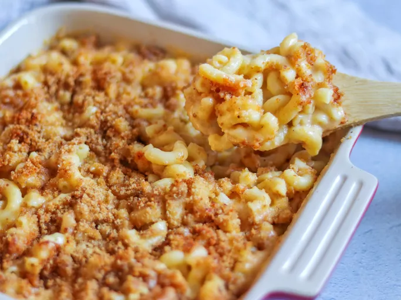

Home
Homemade Mac and Cheese

Description
Skip the boxed stuff and make homemade mac and cheese tonight.
This from-scratch macaroni and cheese recipe will become a staple
in your dinner rotation.
Ingredients
-
Macaroni
-
Butter and flour
-
Milk
-
Cheese
-
Seasonings
-
Bread crumbs
Steps
-
Boil the noodles, drain, and transfer to a prepared baking dish.
-
Make the cheese sauce, pour the sauce over the noodles, and stir.
-
Make the topping, spread it over macaroni and cheese, and sprinkle with paprika.
-
Bake the mac and cheese until the topping is golden brown.